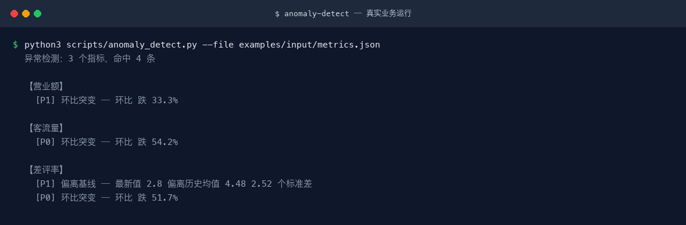

对经营指标序列做偏离、突变、趋势三类检测，输出可解释的预警，供日报与运营中台共用
>
L1 原子技能 · 复杂度 S · 阶段 P0 · 可见性 platform_shared · 版本 v1.0.0

三个指标同时检测，营业额与客流量在第 5 期同步突增被一致标出
| 项 | 内容 |
|---|---|
| 验证等级 | A 级 · 业务真跑 |
| 验证依据 | 自带脚本 anomaly_detect.py，已用真实夹具执行并抓取 stdout/stderr/退出码 |
| 复现命令（在技能库根目录执行） | python3 scripts/anomaly_detect.py --file examples/input/metrics.json |
| 最近一次结果 | 执行成功，退出码 1（非 0 为设计内的阻断判定） |
| 验证日期 | 2026-09-30 |
验证分三级，本仓库如实标注、不伪造业务效果：A 级技能自带确定性脚本并有真实运行证据；B 级为工作流技能，其调用链中的脚本已逐个跑通；C 级为纯提示词技能，已用 OPC 一人公司真实材料实测执行——全库 96 个 C 级技能 100% 跑通、输出契约 100% 符合、质检 391/409、零编造数字，逐条记录见`docs/05-验收与测试.md`。全库分级详见docs/验证报告.md。
⚠️ 本技能尚未填写真实痛点（pain_points），下表为通用推导，信息量有限。
| 现实痛点 | 本技能的做法 |
|---|---|
| 「对经营指标序列做偏离、突变、趋势三类检测」这件事靠人手工做，慢，而且每次结果不一样 | 固定成 5 步流程，同一份输入给出同一套结构，换人做也一致 |
| 机械环节人眼盯不住，会漏、会疲劳 | 由 anomaly_detect.py 承担——零依赖、可复现、零成本，退出码直接表达判定结果，能接进 CI |
| 新人不知道哪里会踩坑，重复交学费 | 已把 2 个真实踩过的坑写进文档，交付前逐条核对 |
| 交付物各写各的，团队没法横向比较 | 输出结构固定为「异常清单 + 排查方向」，不随执行者漂移 |
本技能是标准 Agent 技能：目录名 == name、只使用标准字段、正文里没有任何平台专有工具名。因此同一份目录可以直接用于下列平台：
| 平台 | 安装方式 |
|---|---|
| WorkBuddy | 把技能目录放到 ~/.workbuddy/skills/，或在对话里直接说触发词 |
| ChatGPT | 打包为 zip 后在 Skills 设置里上传（需支持 Skills 的版本） |
| DeepSeek Harness | 新建技能 安装:<repo-url>，或把目录放进 harness 的 skills 目录 |
| Kimi Work | 上传 zip 或放置到技能目录；注意 Kimi Work 不会自动触发，需显式点名技能 |
| 豆包工作 | 新建技能 安装:<repo-url>，或在技能管理处上传 zip |
# 通用做法：把本目录整体复制到目标平台的 skills 目录
cp -r anomaly-detect <平台技能目录>/anomaly-detect方式一 · 自动触发（description 里已写好中英触发词）：
异常检测 数据异常 预警 指标异动方式二 · 显式点名（Kimi Work 不会自动调用，必须用这条）：
用 anomaly-detect 技能帮我处理：<你的材料>本技能自带确定性脚本 anomaly_detect.py，零第三方依赖（仅 Python 标准库）：
python3 scripts/anomaly_detect.py --file examples/input/metrics.json真实输出：docs/images/04-terminal-run.png；完整会话可在 examples/output/session.txt 查看。
三个指标同时检测，营业额与客流量在第 5 期同步突增被一致标出
⚠️ 本技能的真实效果示例尚未补齐。 以下仅为输出结构契约，不构成效果证据。
| 指标 | 异常类型 | 等级 | 值 | 业务解释 | 排查方向 |适用
不适用（写清楚做不到什么，比列一堆能力更有用）
这一段比能力列表更有用：它们是从实际使用中撞出来的，交付前请逐条核对。
Q：脚本需要装第三方库吗？
不需要。anomaly_detect.py 只使用 Python 标准库，python3 直接跑，在任意平台的沙箱里都能执行。
Q：输出不稳定怎么办？
先按这个顺序查：① 输入是否满足「必填」清单——缺料时应当停下来问而不是猜；② 是否走到了降级路径（有脚本的技能会在结尾说明用了哪条）；③ 对照「输出物长什么样」的结构逐项核对，缺项要求补齐而不是接受。
Q：怎么改才能不破坏跨平台性？
三条：目录名 == frontmatter 的 name；只使用标准字段（name / description / license / compatibility / metadata）；正文里不出现任何平台专有工具名，平台差异下沉到 references/。改完跑一次平台兼容校验。
anomaly-detect/
├── SKILL.md # 技能定义（跨平台标准）
├── README.md
├── index.html # 交付物导航页（浏览器打开）
├── site.json # 导航数据
├── docs/
│ ├── 使用手册.md / .html
│ ├── 使用示例.md / .html
│ ├── 用户场景.md / .html
│ ├── 架构与流程图.md / .html
│ └── images/ # 架构图 / 流程图 / 决策矩阵 / 终端截图 / 录屏
├── references/
│ └── architecture.md # 字段、脚本、依赖速查
├── examples/
│ ├── input/ # 真实运行夹具
│ └── output/ # 真实抓取的命令输出
├── demo/
│ └── walkthrough.html # 演示页（真实会话回放）
├── scripts/
│ ├── check_env.py # 环境探测与降级
│ └── anomaly_detect.py| 文档 | 用途 |
|---|---|
docs/使用手册.md | 安装、参数总表、输出物说明、排错手册 |
docs/使用示例.md | 可直接复制的示例，含真实运行输出节选 |
docs/用户场景.md | 谁、什么时机、说什么、得到什么、注意什么 |
docs/架构与流程图.md | 业务架构、执行流程、脚本与模型分工、扩展指南 |
references/architecture.md | 字段、脚本、上下游依赖速查 |
SKILL.md | 技能定义（触发词、能力边界、使用方式） |
demo/walkthrough.html | 演示页：真实会话回放 |
演示录屏：docs/images/08-demo-run.gif（动图）· docs/images/08-demo-run.mp4（视频）
效果图：docs/images/04-terminal-run.png（真实运行）